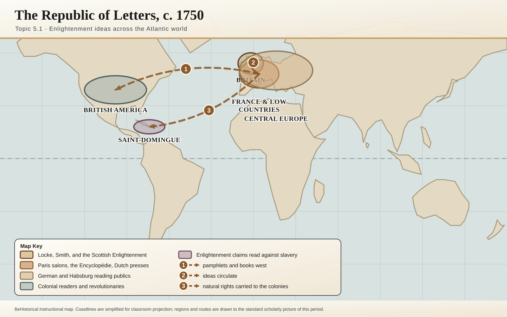
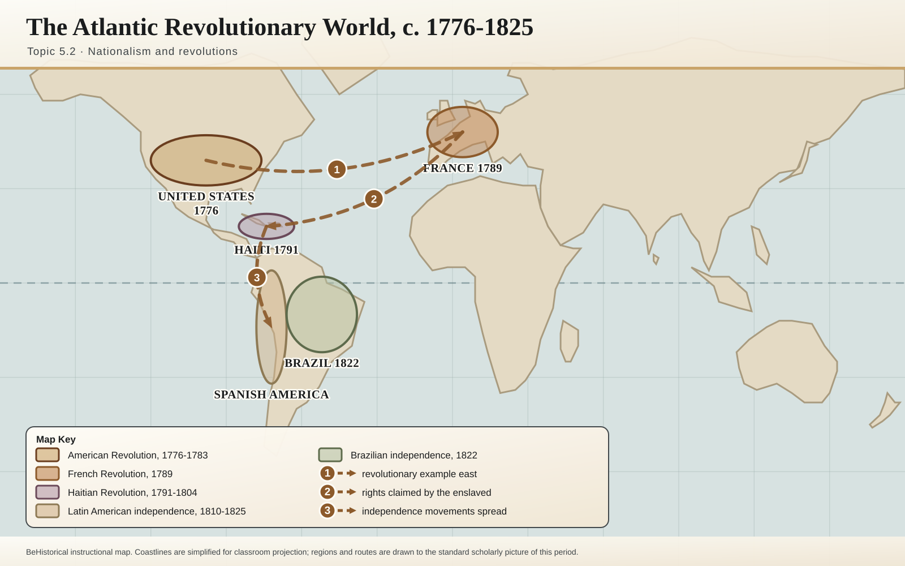
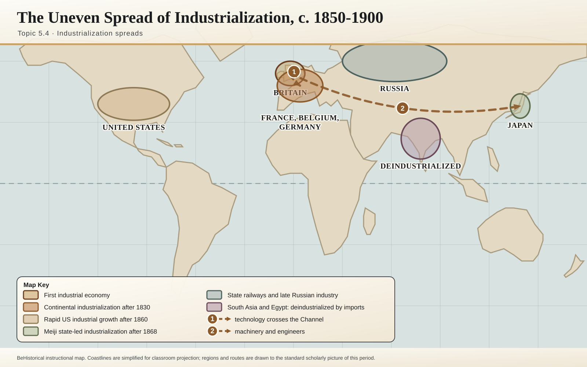
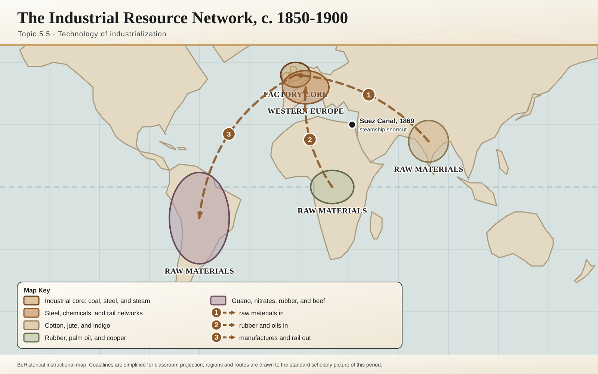
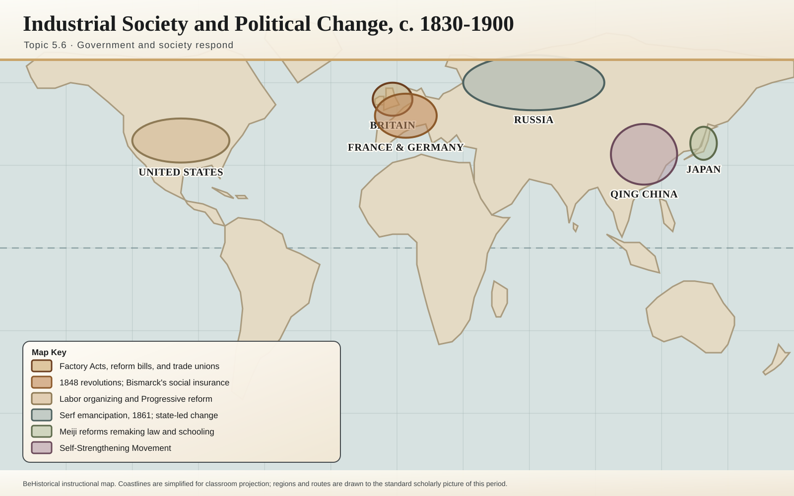
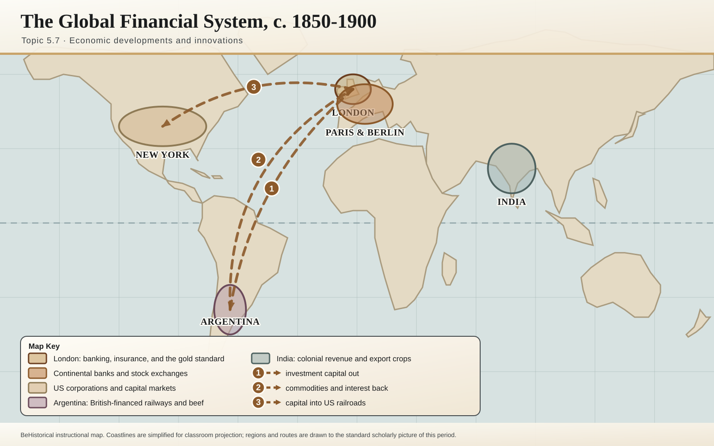
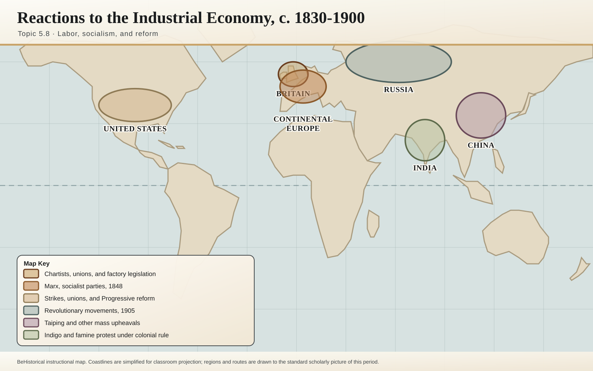

Revolutions
The Enlightenment, political revolutions, industrialization, and social change from c. 1750 to c. 1900.

The Enlightenment
New ideas about government, rights, reason, and society.

Nationalism and Revolutions
Atlantic revolutions, nationalism, and challenges to monarchy.

Industrial Revolution Begins
Causes of industrialization and early industrial change.

Industrialization Spreads
Industrialization beyond Britain and global economic shifts.

Technology of Industrialization
Steam, railroads, factories, and mechanized production.

Industrialization: Government and Society
Urbanization, class change, labor, and reform.

Economic Developments and Innovations
Capitalism, socialism, and responses to industrial change.

Reactions to Industrial Economy
Reform movements, labor movements, and social challenges.

Society and the Industrial Age
New social classes, gender roles by class, and the challenges of rapid urbanization.

Continuity and Change in the Industrial Age
Argue the extent of change and continuity from 1750 to 1900.